The Ellipse
Learning Objectives
- Complete the square of a binomial expression. (IA 9.2.1)
- Graph a circle. (IA 11.1.4)
Objective 1: Complete the square of a binomial expression. (IA 9.2.1)
But what happens if we have to solve an equation where the trinomial is not a perfect square?
For example, ? For these types of equations, we can use a process called completing the square.
Recall .
We can use the Binomial Squares Pattern to make a perfect square.
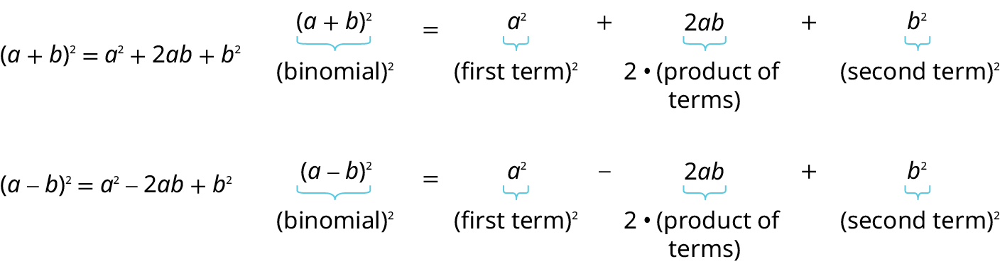
Complete the square of a binomial expression
Complete the square for to make it a perfect square.
Solution
| Since there is a plus sign between the two terms, we will use the (a + b)2 pattern . | |
| We ultimately need to find the last term of this trinomial that will make it a perfect square trinomial. To do that we will need to find b. But first we start with determining a. Notice that the first term of x2 + 6x is a square, x2. This tells us that a = x. | |
| What number, b, when multiplied with 2x, gives 6x? It would have to be 3, which is (½)(6). So b = 3. |
|
| Now to complete the perfect square trinomial, we will find the last term by squaring b, which is 32 = 9. | |
| We can now factor. |
So, we found that adding 9 to x2 + 6x completes the square, and we write it as (x + 3)2.
Practice Makes Perfect
Determine what number would have to be added to the given terms to create a perfect square trinomial. Then rewrite as a binomial squared.
Objective 2: Graph a circle. (IA 11.1.4)
A circle is all points in a plane that are a fixed distance from a given point in the plane. The given point is called the center, (h, k) and the fixed distance is called the radius, r, of the circle.
The standard or graphing form of the equation of a circle with center, (h, k) and radius, r, is .
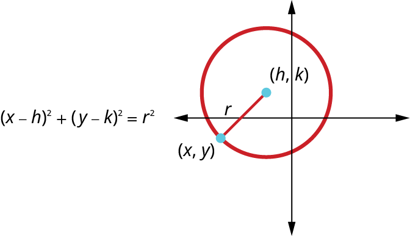
Write the standard form the equation of a circle
Write the standard (graphing) form of the equation of the circle with radius 2 and center (-1, 3).
Solution
| Use the standard, (graphing) form of the equation of a circle. | |
| Substitute in the values (h, k)=(1, -3), where h=1, k=-3. | |
| Simplify. |
Graph a circle
Graph a circle
Find the center and radius, then graph the circle:
Solution
| Use the standard (graphing) form of the equation of a circle. | |
| Identify the center, (h,k) and radius, r. | |
| Graph the circle. | Center (-2, 1), r=3 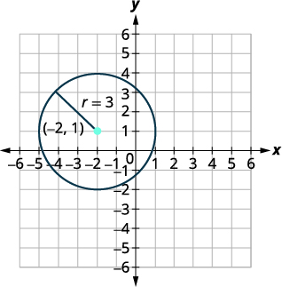 |
The general form of the equation of a circle is . If we are given an equation in general form, we can change it to standard, also called the graphing form, by completing the squares in both x and y. Then we can graph the circle using its center and radius.
Graph a circle
Find the center and radius, then graph the circle:
Solution
We need to rewrite this general form into standard (graphing) form in order to find the center and radius.
| Group the x-terms and y-terms. Collect the constants on the right side. | |
| Complete the squares. | |
| Rewrite as binomial squares. | |
| Identify the center and radius. | Center (2, 3), r=3 |
| Graph the circle. |
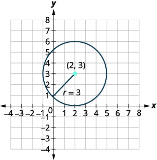 |
Practice Makes Perfect
Write the standard (graphing) form of the equation of the circle with radius 4 and center (2,–5).
Find the center and radius, then graph the circle:
Find the center and radius, then graph the circle:
Can you imagine standing at one end of a large room and still being able to hear a whisper from a person standing at the other end? The National Statuary Hall in Washington, D.C., shown in Figure 1, is such a room.Architect of the Capitol. http://www.aoc.gov. Accessed April 15, 2014. It is an semi-circular room called a whispering chamber because the shape makes it possible for sound to travel along the walls and dome. In this section, we will investigate the shape of this room and its real-world applications, including how far apart two people in Statuary Hall can stand and still hear each other whisper.
Writing Equations of Ellipses in Standard Form
A conic section, or conic, is a shape resulting from intersecting a right circular cone with a plane. The angle at which the plane intersects the cone determines the shape, as shown in Figure 2.
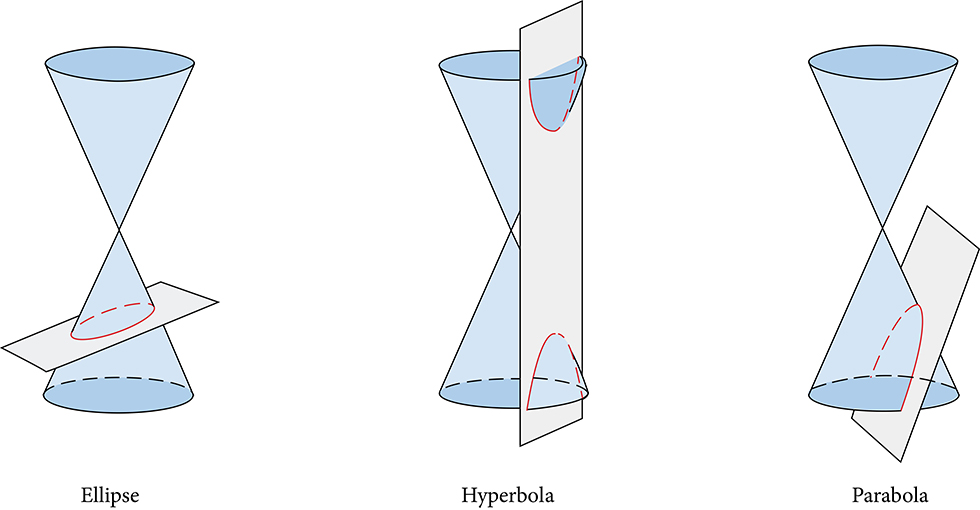
Conic sections can also be described by a set of points in the coordinate plane. Later in this chapter, we will see that the graph of any quadratic equation in two variables is a conic section. The signs of the equations and the coefficients of the variable terms determine the shape. This section focuses on the four variations of the standard form of the equation for the ellipse. An ellipse is the set of all points in a plane such that the sum of their distances from two fixed points is a constant. Each fixed point is called a focus (plural: foci).
We can draw an ellipse using a piece of cardboard, two thumbtacks, a pencil, and string. Place the thumbtacks in the cardboard to form the foci of the ellipse. Cut a piece of string longer than the distance between the two thumbtacks (the length of the string represents the constant in the definition). Tack each end of the string to the cardboard, and trace a curve with a pencil held taut against the string. The result is an ellipse. See Figure 3.
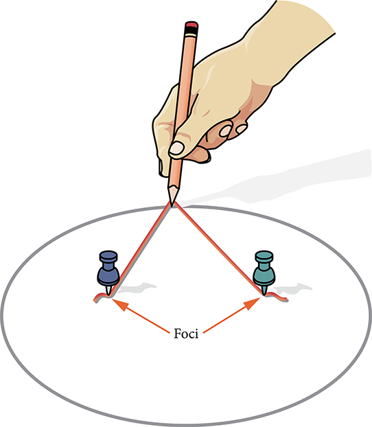
Every ellipse has two axes of symmetry. The longer axis is called the major axis, and the shorter axis is called the minor axis. Each endpoint of the major axis is the vertex of the ellipse (plural: vertices), and each endpoint of the minor axis is a co-vertex of the ellipse. The center of an ellipse is the midpoint of both the major and minor axes. The axes are perpendicular at the center. The foci always lie on the major axis, and the sum of the distances from the foci to any point on the ellipse (the constant sum) is greater than the distance between the foci. See Figure 4.
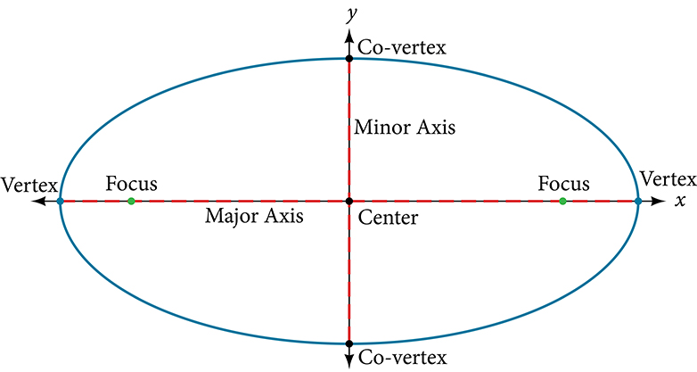
In this section, we restrict ellipses to those that are positioned vertically or horizontally in the coordinate plane. That is, the axes will either lie on or be parallel to the x- and y-axes. Later in the chapter, we will see ellipses that are rotated in the coordinate plane.
To work with horizontal and vertical ellipses in the coordinate plane, we consider two cases: those that are centered at the origin and those that are centered at a point other than the origin. First we will learn to derive the equations of ellipses, and then we will learn how to write the equations of ellipses in standard form. Later we will use what we learn to draw the graphs.
Deriving the Equation of an Ellipse Centered at the Origin
To derive the equation of an ellipse centered at the origin, we begin with the foci and The ellipse is the set of all points such that the sum of the distances from to the foci is constant, as shown in Figure 5.
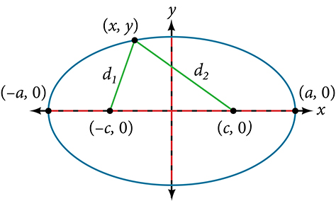
If is a vertex of the ellipse, the distance from to is The distance from to is . The sum of the distances from the foci to the vertex is
If is a point on the ellipse, then we can define the following variables:
By the definition of an ellipse, is constant for any point on the ellipse. We know that the sum of these distances is for the vertex It follows that for any point on the ellipse. We will begin the derivation by applying the distance formula. The rest of the derivation is algebraic.
Thus, the standard equation of an ellipse is This equation defines an ellipse centered at the origin. If the ellipse is stretched further in the horizontal direction, and if the ellipse is stretched further in the vertical direction.
Writing Equations of Ellipses Centered at the Origin in Standard Form
Standard forms of equations tell us about key features of graphs. Take a moment to recall some of the standard forms of equations we’ve worked with in the past: linear, quadratic, cubic, exponential, logarithmic, and so on. By learning to interpret standard forms of equations, we are bridging the relationship between algebraic and geometric representations of mathematical phenomena.
The key features of the ellipse are its center, vertices, co-vertices, foci, and lengths and positions of the major and minor axes. Just as with other equations, we can identify all of these features just by looking at the standard form of the equation. There are four variations of the standard form of the ellipse. These variations are categorized first by the location of the center (the origin or not the origin), and then by the position (horizontal or vertical). Each is presented along with a description of how the parts of the equation relate to the graph. Interpreting these parts allows us to form a mental picture of the ellipse.
Writing the Equation of an Ellipse Centered at the Origin in Standard Form
What is the standard form equation of the ellipse that has vertices and foci
Solution
The foci are on the x-axis, so the major axis is the x-axis. Thus, the equation will have the form
The vertices are so and
The foci are so and
We know that the vertices and foci are related by the equation Solving for we have:
Now we need only substitute and into the standard form of the equation. The equation of the ellipse is
Writing Equations of Ellipses Not Centered at the Origin
Like the graphs of other equations, the graph of an ellipse can be translated. If an ellipse is translated units horizontally and units vertically, the center of the ellipse will be This translation results in the standard form of the equation we saw previously, with replaced by and y replaced by
Writing the Equation of an Ellipse Centered at a Point Other Than the Origin
What is the standard form equation of the ellipse that has vertices and
and foci and
Solution
The x-coordinates of the vertices and foci are the same, so the major axis is parallel to the y-axis. Thus, the equation of the ellipse will have the form
First, we identify the center, The center is halfway between the vertices, and Applying the midpoint formula, we have:
Next, we find The length of the major axis, is bounded by the vertices. We solve for by finding the distance between the y-coordinates of the vertices.
So
Now we find The foci are given by So, and We substitute using either of these points to solve for
So
Next, we solve for using the equation
Finally, we substitute the values found for and into the standard form equation for an ellipse:
Graphing Ellipses Centered at the Origin
Just as we can write the equation for an ellipse given its graph, we can graph an ellipse given its equation. To graph ellipses centered at the origin, we use the standard form for horizontal ellipses and for vertical ellipses.
Graphing an Ellipse Centered at the Origin
Graph the ellipse given by the equation, Identify and label the center, vertices, co-vertices, and foci.
Solution
- the center of the ellipse is
- the coordinates of the vertices are
- the coordinates of the co-vertices are
- the coordinates of the foci are where Solving for we have:
Therefore, the coordinates of the foci are
Next, we plot and label the center, vertices, co-vertices, and foci, and draw a smooth curve to form the ellipse. See Figure 7.
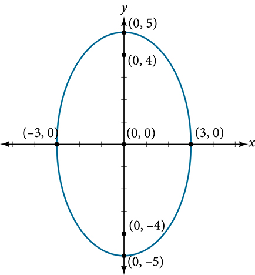
Graphing an Ellipse Centered at the Origin from an Equation Not in Standard Form
Graph the ellipse given by the equation Rewrite the equation in standard form. Then identify and label the center, vertices, co-vertices, and foci.
Solution
First, use algebra to rewrite the equation in standard form.
- the center of the ellipse is
- the coordinates of the vertices are
- the coordinates of the co-vertices are
- the coordinates of the foci are where Solving for we have:
Therefore the coordinates of the foci are
Next, we plot and label the center, vertices, co-vertices, and foci, and draw a smooth curve to form the ellipse.
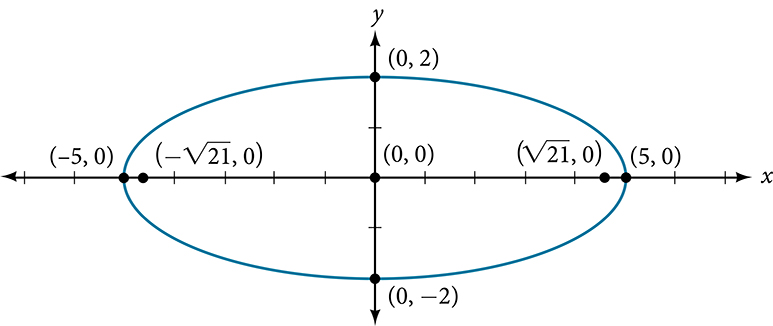
Graphing Ellipses Not Centered at the Origin
When an ellipse is not centered at the origin, we can still use the standard forms to find the key features of the graph. When the ellipse is centered at some point, we use the standard forms for horizontal ellipses and for vertical ellipses. From these standard equations, we can easily determine the center, vertices, co-vertices, foci, and positions of the major and minor axes.
Graphing an Ellipse Centered at (h, k)
Graph the ellipse given by the equation, Identify and label the center, vertices, co-vertices, and foci.
Solution
First, we determine the position of the major axis. Because the major axis is parallel to the y-axis. Therefore, the equation is in the form where and It follows that:
- the center of the ellipse is
- the coordinates of the vertices are or and
- the coordinates of the co-vertices are or and
- the coordinates of the foci are where Solving for we have:
Therefore, the coordinates of the foci are and
Next, we plot and label the center, vertices, co-vertices, and foci, and draw a smooth curve to form the ellipse.
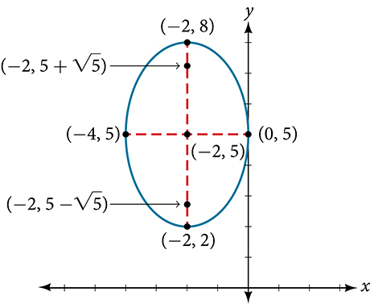
Graphing an Ellipse Centered at (h, k) by First Writing It in Standard Form
Graph the ellipse given by the equation Identify and label the center, vertices, co-vertices, and foci.
Solution
We must begin by rewriting the equation in standard form.
Group terms that contain the same variable, and move the constant to the opposite side of the equation.
Factor out the coefficients of the squared terms.
Complete the square twice. Remember to balance the equation by adding the same constants to each side.
Rewrite as perfect squares.
Divide both sides by the constant term to place the equation in standard form.
Now that the equation is in standard form, we can determine the position of the major axis. Because the major axis is parallel to the x-axis. Therefore, the equation is in the form where and It follows that:
- the center of the ellipse is
- the coordinates of the vertices are or and
- the coordinates of the co-vertices are or and
- the coordinates of the foci are where Solving for we have:
Therefore, the coordinates of the foci are and
Next we plot and label the center, vertices, co-vertices, and foci, and draw a smooth curve to form the ellipse as shown in Figure 10.
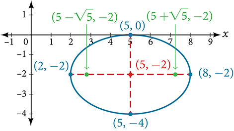
Solving Applied Problems Involving Ellipses
Many real-world situations can be represented by ellipses, including orbits of planets, satellites, moons and comets, and shapes of boat keels, rudders, and some airplane wings. A medical device called a lithotripter uses elliptical reflectors to break up kidney stones by generating sound waves. Some buildings, called whispering chambers, are designed with elliptical domes so that a person whispering at one focus can easily be heard by someone standing at the other focus. This occurs because of the acoustic properties of an ellipse. When a sound wave originates at one focus of a whispering chamber, the sound wave will be reflected off the elliptical dome and back to the other focus. See Figure 11. In the whisper chamber at the Museum of Science and Industry in Chicago, two people standing at the foci—about 43 feet apart—can hear each other whisper. When these chambers are placed in unexpected places, such as the ones inside Bush International Airport in Houston and Grand Central Terminal in New York City, they can induce surprised reactions among travelers.
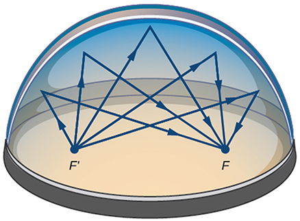
Locating the Foci of a Whispering Chamber
A large room in an art gallery is a whispering chamber. Its dimensions are 46 feet wide by 96 feet long as shown in Figure 12.
- What is the standard form of the equation of the ellipse representing the outline of the room? Hint: assume a horizontal ellipse, and let the center of the room be the point
- If two visitors standing at the foci of this room can hear each other whisper, how far apart are the two visitors? Round to the nearest foot.
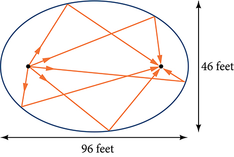
Solution
- We are assuming a horizontal ellipse with center so we need to find an equation of the form where We know that the length of the major axis, is longer than the length of the minor axis, So the length of the room, 96, is represented by the major axis, and the width of the room, 46, is represented by the minor axis.
- Solving for we have so and
- Solving for we have so and
Therefore, the equation of the ellipse is
- To find the distance between the senators, we must find the distance between the foci, where Solving for we have:
The points represent the foci. Thus, the distance between the senators is feet.
Key Equations
| Horizontal ellipse, center at origin | |
| Vertical ellipse, center at origin | |
| Horizontal ellipse, center | |
| Vertical ellipse, center |
Key Concepts
- An ellipse is the set of all points in a plane such that the sum of their distances from two fixed points is a constant. Each fixed point is called a focus (plural: foci).
- When given the coordinates of the foci and vertices of an ellipse, we can write the equation of the ellipse in standard form. See Example 5 and Example 6.
- When given an equation for an ellipse centered at the origin in standard form, we can identify its vertices, co-vertices, foci, and the lengths and positions of the major and minor axes in order to graph the ellipse. See Example 7 and Example 8.
- When given the equation for an ellipse centered at some point other than the origin, we can identify its key features and graph the ellipse. See Example 9 and Example 10.
- Real-world situations can be modeled using the standard equations of ellipses and then evaluated to find key features, such as lengths of axes and distance between foci. See Example 11.
Section Exercises
Verbal
Define an ellipse in terms of its foci.
Solution
An ellipse is the set of all points in the plane the sum of whose distances from two fixed points, called the foci, is a constant.
Where must the foci of an ellipse lie?
What special case of the ellipse do we have when the major and minor axis are of the same length?
Solution
This special case would be a circle.
For the special case mentioned in the previous question, what would be true about the foci of that ellipse?
What can be said about the symmetry of the graph of an ellipse with center at the origin and foci along the y-axis?
Solution
It is symmetric about the x-axis, y-axis, and the origin.
Algebraic
For the following exercises, determine whether the given equations represent ellipses. If yes, write in standard form.
Solution
yes;
Solution
yes;
For the following exercises, write the equation of an ellipse in standard form, and identify the end points of the major and minor axes as well as the foci.
Solution
Endpoints of major axis and Endpoints of minor axis and Foci at
Solution
Endpoints of major axis and Endpoints of minor axis Foci at
Solution
Endpoints of major axis Endpoints of minor axis Foci at
Solution
Endpoints of major axis Endpoints of minor axis Foci at
Solution
Endpoints of major axis Endpoints of minor axis Foci at
Solution
Endpoints of major axis Endpoints of minor axis Foci at
Solution
Endpoints of major axis Endpoints of minor axis Foci at
Solution
Endpoints of major axis Endpoints of minor axis Foci at
For the following exercises, find the foci for the given ellipses.
Solution
Foci
Solution
Focus
Solution
Foci
Graphical
For the following exercises, graph the given ellipses, noting center, vertices, and foci.
Solution
Center Vertices Foci
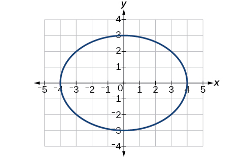
Solution
Center Vertices Foci
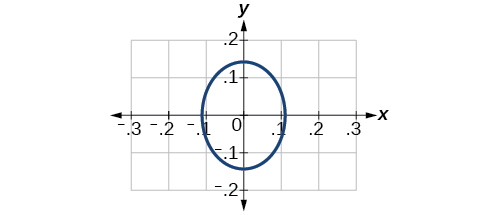
Solution
Center Vertices Focus
Note that this ellipse is a circle. The circle has only one focus, which coincides with the center.
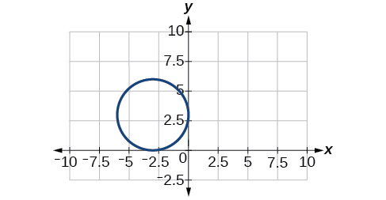
Solution
Center Vertices Foci
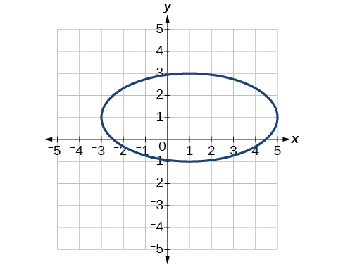
Solution
Center Vertices Foci
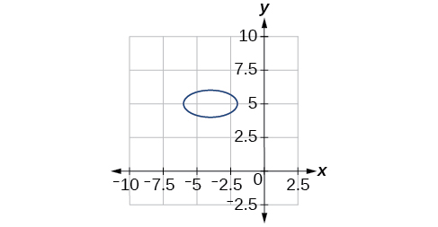
Solution
Center Vertices Foci
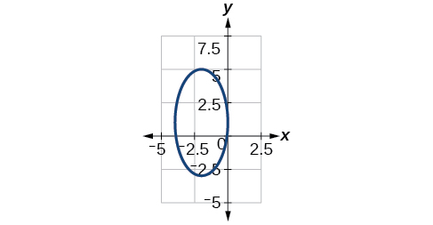
Solution
Center Vertices Focus
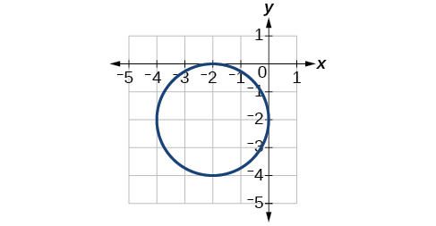
For the following exercises, use the given information about the graph of each ellipse to determine its equation.
Center at the origin, symmetric with respect to the x- and y-axes, focus at and point on graph
Center at the origin, symmetric with respect to the x- and y-axes, focus at and point on graph
Solution
Center at the origin, symmetric with respect to the x- and y-axes, focus at and major axis is twice as long as minor axis.
Center ; vertex ; one focus: .
Solution
Center ; vertex ; one focus:
Center ; vertex ; one focus:
Solution
For the following exercises, given the graph of the ellipse, determine its equation.
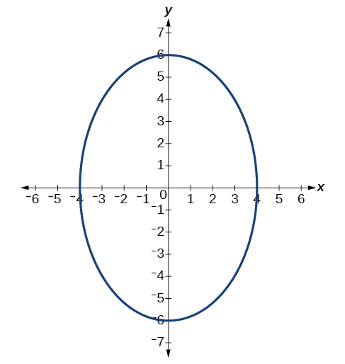
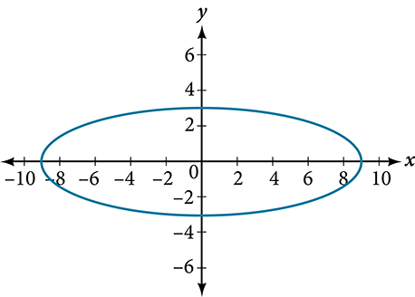
Solution
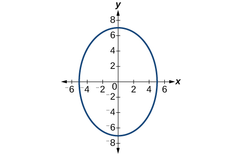
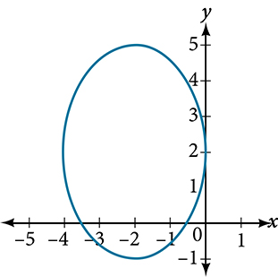
Solution
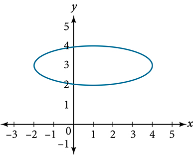
Extensions
For the following exercises, find the area of the ellipse. The area of an ellipse is given by the formula
Solution
Solution
square units.
Solution
square units.
Real-World Applications
Find the equation of the ellipse that will just fit inside a box that is 8 units wide and 4 units high.
Find the equation of the ellipse that will just fit inside a box that is four times as wide as it is high. Express in terms of the height.
Solution
An arch has the shape of a semi-ellipse (the top half of an ellipse). The arch has a height of 8 feet and a span of 20 feet. Find an equation for the ellipse, and use that to find the height to the nearest 0.01 foot of the arch at a distance of 4 feet from the center.
An arch has the shape of a semi-ellipse. The arch has a height of 12 feet and a span of 40 feet. Find an equation for the ellipse, and use that to find the distance from the center to a point at which the height is 6 feet. Round to the nearest hundredth.
Solution
. Distance = 17.32 feet
A bridge is to be built in the shape of a semi-elliptical arch and is to have a span of 120 feet. The height of the arch at a distance of 40 feet from the center is to be 8 feet. Find the height of the arch at its center.
A person in a whispering gallery standing at one focus of the ellipse can whisper and be heard by a person standing at the other focus because all the sound waves that reach the ceiling are reflected to the other person. If a whispering gallery has a length of 120 feet, and the foci are located 30 feet from the center, find the height of the ceiling at the center.
Solution
Approximately 51.96 feet
A person is standing 8 feet from the nearest wall in a whispering gallery. If that person is at one focus, and the other focus is 80 feet away, what is the length and height at the center of the gallery?